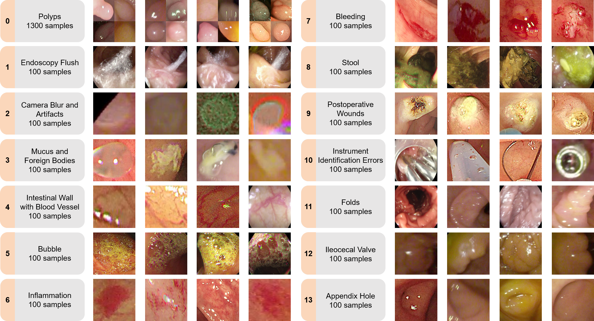
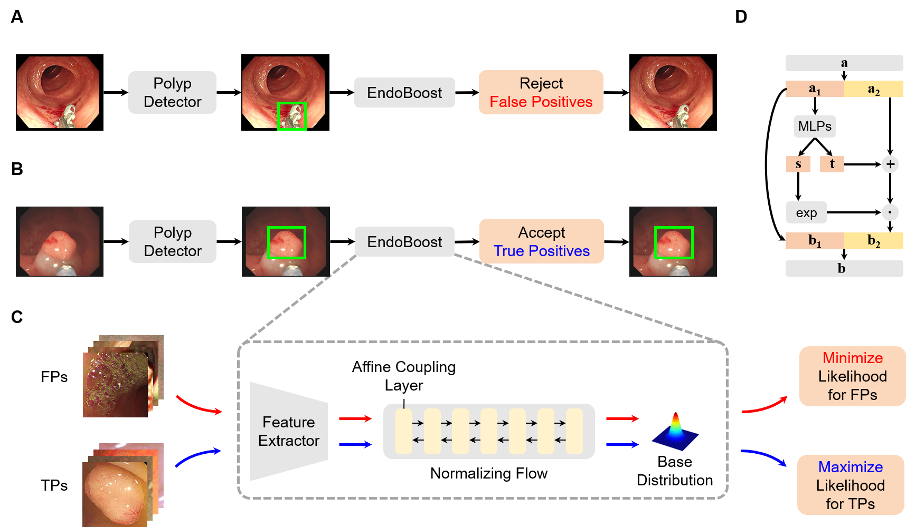

*Equal contribution
†Corresponding authors
The advance of computer-aided detection systems using deep learning opened a new scope in endoscopic image analysis.
However, the learning-based models developed on closed datasets are susceptible to unknown anomalies in complex clinical environments.
In particular, the high false positive rate of polyp detection remains a major challenge in clinical practice.
In this work, we release the FPPD-13 dataset, which provides a taxonomy and real-world cases of typical false positives during computer-aided polyp detection in real-world colonoscopy.
We further propose a post-hoc module EndoBoost, which can be plugged into generic polyp detection models to filter out false positive predictions.
This is realized by generative learning of the polyp manifold with normalizing flows and rejecting false positives through density estimation.
Compared to supervised classification, this anomaly detection paradigm achieves better data efficiency and robustness in open-world settings.
Extensive experiments demonstrate a promising false positive suppression in both retrospective and prospective validation.
In addition, the released dataset can be used to perform `stress' tests on established detection systems and encourages further research toward robust and reliable computer-aided endoscopic image analysis.
\
False Positive Polyp Detection-13 (FPPD-13) dataset includes real-world cases of true positives (TPs) and 13 classes of false positives (FPs) with a comprehensive taxonomy.
It is a novel addition to existing colonoscopy datasets and a valuable data source to benchmark and improve model robustness for clinical practice.
The FPPD-13 dataset includes a total of 2,600 representative samples.
Specifically, TPs take up half of the whole dataset, and the remaining 1,300 samples are collected evenly from the 13 FP classes, each with 100 samples.
Download FPPD-13 Dataset: [GoogleDrive] [BaiduCloud](code:fppd)

EndoBoost is a plug-and-play module for the suppression of FPs during polyp detection.
EndoBoost follows the formulation of anomaly detection and takes FPs as anomalies.
Specifically, a normalizing flow is utilized for density estimation in the feature space and rejecting FPs during real-time inference.
We develop a learnable image encoder to obtain an informative feature space for the anomaly detection task.
The image encoder and the normalizing flow are jointly optimized to learn the TP manifold while the FP samples are also exploited through outlier exposure.
This website is inspired by the template of MINE.